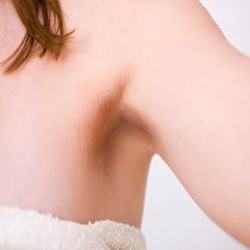

Dark underarms and dark armpits

Don’t!
1. Avoid wearing tight clothing or synthetic fabrics too often as this will cause excessive friction.
2. Take care not to spray deodorants directly on the skin, keep a distance of 6 cm and spray. Chemicals present in deodorants are a cause for darkened skin.
3. Restrict use of depilatory creams as the chemicals darken skin. When you do use a hair removing cream – wash underarm thoroughly with warm water. Use a mudpack made with fullers earth as this will absorb all the chemicals and leave the area clean and dry.
4. When the arms are very flabby and heavy due to obesity – dark underarms can result.
Do!
5. Add lemon juice to baking soda and apply this paste, leave it till it dries and wash. Dry thoroughly.
6. Rub the underarm area with a slice of potato. Potato juice can also be applied with good results as it can bleach skin.
7. To 1 tablespoon of sandalwood powder add enough rose water to make a paste. Apply and leave for 15-20 minutes. Wash and dry thoroughly.
8. Make a scrub with 1 tablespoon lemon juice, 1 teaspoon honey and 1 teaspoon of powdered walnuts or peanuts. Apply and leave on for 20 minutes. Honey nourishes the skin, while lime acts as a bleaching agent and nuts provide essential nutrients and oils.
9. Mash 1 ripe banana and combine the pulp with 1 teaspoon of lemon juice, a pinch of turmeric powder and apply, leave for 20 minutes. Wash off and dry thoroughly.
10. Try to use an anti fungal powder or alum powder instead of a deodorant.